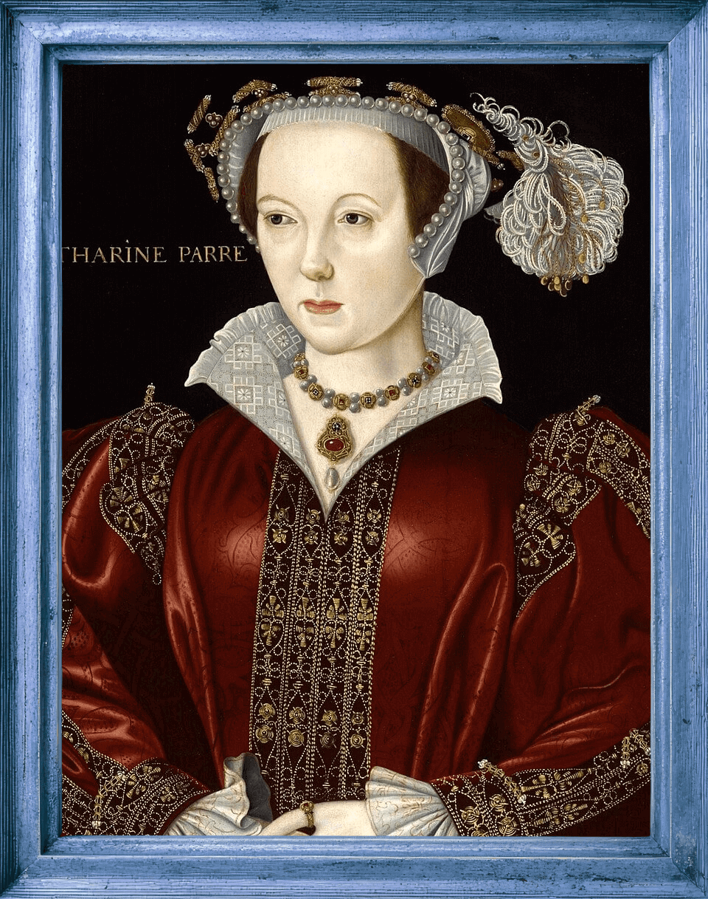

Catherine Parr - Liberal?
Catherine Parr was very forward thinking for her time. The first woman to be published in England. Sharp views on the reformation of the church. Family Mender. Would she be considered a liberal today?
Catherine Parr - the queen who really would have rather not. Born in 1512, to Sir Thomas Parr and Maud Green, Parr's godmother was actually Catherine of Aragon, her namesake. By the time she caught Henry's attention, she was on husband number two and unavailable. However, Catherine Parr's second husband, John Neville, 3rd Baron Latimore passed away in 1543 and Henry took his shot.
As many historians will tell you, Catherine Parr had been deeply in love with Thomas Seymour (Jane Seymour's younger brother) at the time of Henry's proposal. Catherine had been trying to avoid being put in that situation by announcing her engagement to Seymour, but Henry, getting wind of the relationship, sent Seymour abroad for several months. Since Catherine was a woman alone, she had to wait until Thomas came back to announce their engagement. By the time the king propesed, she had no recourse but to accept when he pressed his suit.
During her four-year run as Henry's queen, Catherine achieved more than any of her predecessors. She is first and foremost credited with mending the Tudor family and restoring the princesses to their titles and their roles in the succession. She became close with Mary despite their religious differences, and she took over Elizabeth and Edward's educations. Henry trusted Catherine Parr so much, he actually left her in his stead, as Queen Regent while he fought his wars in France. She ruled by herself for three months.
Catherine Parr is also the only of Henry VIII's wives to have published works. She was, in fact, the first woman in England to publish original work, in English, under her own name. She employed women as much as possible, going as far to hire a woman to paint her portrait.
Catherine was very outspoken in her religious beliefs, which were more reformist than Henry and his church allowed. In 1546, a warrant was issued for her arrest by conservative factions, and she had to convince Henry that the debates that often occurred in her rooms were just a means of learning more and distracting Henry from the discomfort his leg pain caused. Whew!

Catherine Parr was very forward thinking for her time. The first woman to be published in England. Sharp views on the reformation of the church. Family Mender. Would she be considered a liberal today?